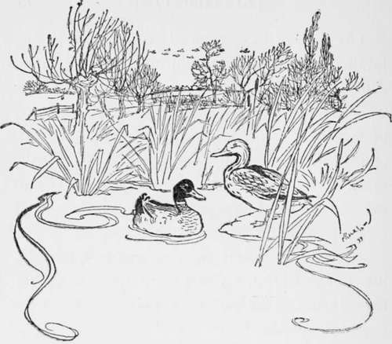

Chapter XII. Stag-Hunting
Description
This section is from the book "Hunting: A Manual of Fox, Hare, Stag & Otter Hunting", by J. Otho Paget. Also available from Amazon: Hunting: A Manual of Fox, Hare, Stag & Otter Hunting.
Chapter XII. Stag-Hunting
In most parts of England two hundred years ago, both red and fallow deer were scattered fairly plentifully over the land. Every large owner of the soil preserved herds in his woods and parks, which wandered about where they listed, free from any except legitimate danger. Hounds were not then bound down to the pursuit of one animal, so that when a hunting-party failed to find the deer they sought, they were content to follow the hare or fox. The enclosing and cultivating of the land has changed all this, so that now the wild red deer has been driven to where man is seldom seen and his habitations are few. Amongst the impossible hills of Scotland they always escaped extinction, and now that deer-stalking has become popular their numbers have again increased.
The fallow deer still run wild in the New Forest and afford there some very pretty sport with hounds. In England the wild red stag has found a home amongst the coombes and wooded valleys that surround Exmoor. Here the landowners, assisted by loyal and sporting farmers, preserve them for the Devon and Somerset hounds to hunt. This pack is made up of drafts from foxhound kennels that have been parted with on account of size, and stand from twenty-five to twenty-six inches. A large hound is a necessity in going through the heather, but he must also be built on the right lines to stand the work over such a rough country, with perhaps a run of twenty miles and a like distance back to kennels.
Though Exmoor is a very beautiful country, it is not an ideal one to ride over or to follow hounds, for this reason, that they are more often than not out of sight, and your only chance is to ride for certain points. Were any one to attempt riding straight he would soon get to the bottom of his horse, and probably get bogged at the finish. It is wonderful how those sportsmen who hunt regularly with this pack get about: they are very seldom out of a run.
Jumping fences is not one of the dangers you have to encounter, but there are many other things that will try the nerves of the boldest horseman, such as galloping down precipitous hills, crawling up steep banks, and going at top speed over the roughest ground. You are told that the horses are used to it and seldom fall, but as you are not used to it, this information does not give you much confidence. A good straight run over the moor is a thing to be remembered, and is an experience that any real sportsman will enjoy, but there are many disappointments in this form of hunting, and if you go down for two or three days you are more than likely to return with a very poor opinion of the celebrated wild stag-hunting.
To begin with, you may have great difficulty in separating a warrantable stag from the rest of the herd, and when that is accomplished he will very likely run only from one wood to another and refuse to face the open. The fox-hunter, who looks upon the finding of the fox as half the business of his sport, does not take kindly to seeing two or three couple used only for that purpose, the rest of the pack being meanwhile shut up in the nearest farmhouse. The use of ' tufters,' as they are called, is, however, a necessity in driving the old stag from his companions, and to throw the whole pack into covert would mean the slaughter of calves and yearlings. It would be difficult to say exactly what would happen, but I imagine hounds would be split up into small parties, and it would be impossible to re-unite them when the right kind of stag went away.
The most important person is the harbourer, and on his skill the day's sport mainly depends. He must not only track the deer to the covert where it finally lies down to rest, but he must be able to know by its slot whether it is the right size and age. Unless the man is competent and well up to his work, you may perhaps spend the whole day in drawing for the animal you want. The harbourer's duties entail much labour and he has often to be out the whole night, so that those who have the management of hounds cannot be expected to do that work. It seems to me, however, that those who are very keen about this sport and follow the staghounds regularly, ought to make themselves acquainted with the harbourer's art, and be able to read the signs of a footprint as easily as the letters on this page. For the thorough enjoyment of any sport a man should be familiar with every little detail affecting it, and the greater his knowledge the greater will be his pleasure.
Of course, the man like myself who goes down in the autumn for a day or two on Exmoor, and is not a regular follower of the hunt, cannot be expected to know anything ; but I think the man who styles himself a stag-hunter ought to be able to harbour a deer. It seems to me all part of the business—a most important item in that branch of venery, and, I should think, very interesting, though perhaps a trifle arduous. There is no technical detail that is beneath the notice and study of any one who loves the sport he pursues.
It is perhaps one of the greatest pleasures in hunting to find your way across-country and after hounds entirely dependent on your own resources and skill. This is a pleasure, however, which I should advise the stranger on Exmoor to forgo, or he may find himself in some difficulty that might have been avoided had he availed himself of the pilotage of local talent. In any ordinary country you generally find that by following hounds and keeping close to them, you seldom come across a place which is beyond a horse's powers, but you must forget this old theory when you go stag-hunting on Exmoor.
However keen you may be about fox-hunting, you will do well to spare a week at the end of August or beginning of September to pay the Devon and Somerset a visit. The two sports are so totally different that it would be absurd to compare them, but that stag-hunting is real sport in the true sense of the word, you will be obliged to admit when you have seen a stag found and then fairly hunted to death.
It is more or less the fashion to hunt with the Devon and Somerset in the autumn, which, of course, means a crowd with little room to watch hounds ; but late in April the fields are generally small, and it is at that time of the year they often have the best sport.
The men of Devon are all good sportsmen and loyally preserve the stag, which will often do more damage in one night to crops than a fox will in a whole season amongst the hen-roosts. Hunting in this county is said to go on all the year round, either with the stag, the fox, the hare, or else the otter. The yeomen are not only keen about every form of hunting, but they understand it and appreciate the work of hounds.
In the New Forest the deer are just as wild, but not having the strength of the red variety they do not make such good points. They have excellent sport and occasionally some very good runs, but it is in the late spring, when fox-hunting is over, that this hunt becomes most popular and its doings chronicled far and wide. From the north and from the midlands sportsmen hurry down south, to hear once more the cry of hounds before the season is closed.
Hunting the carted stag is a very harmless amusement, and affords many people the opportunity of hearing the cry of hounds and riding across-country who cannot find time for the legitimate thing, but it is not sport, and is only a degree above the ' red herring.'

Continue to: